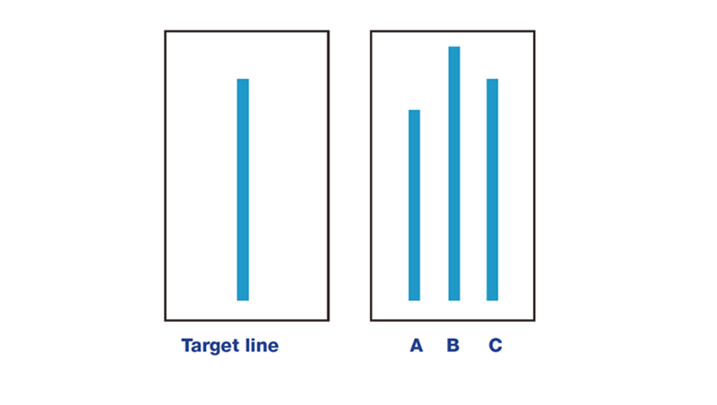
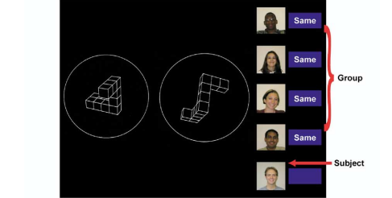
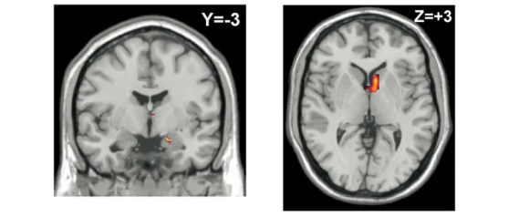

28 MAY 2025 | BY EMILY LOH
Actors portaying the events of the Asch conformity experiment for TV documentation.
Have you ever been to a college party—the kind with beer pong, jungle juice, bass-boosted music, and drunk strangers? Well, I have.
You might not expect that from someone like me. I grew up away from parties, preferring long creative writing sessions in my bed or impulsively starting new Scratch projects at my desk. Loud crowds drain me, so I’d rather comfort a friend one-on-one than join a protest.
Despite all that, I somehow found myself hosting a party. My roommate planned it, and I nervously gave her the green light. I was worried about everything—noise complaints, the cops, people breaking stuff, drunk people hogging up the bathroom, and the smell of smoke around the house. Up until the hour of the party, those thoughts kept me on my toes.
Then, before I could process it, the party had begun. To my surprise, I started to enjoy it, forgetting all my worries. I didn’t drink or socialize with strangers at all, but I stuck with my friends, enjoyed the free food, and controlled the music. DJing for the crowd, taking requests, and shifting the mood made me feel alive.
But the good times didn’t last. The fog machine set off the fire alarm, which someone ripped off our ceiling and threw outside in the mud. Then the cops showed up at our door with a noise complaint. Some people ignored our rules and smoked in the backyard. Worst of all, the number of drunk people needing to throw up surged, and our only two bathrooms were constantly occupied.
When it all ended, I found myself sitting on the carpet floor of my bedroom, alone. That post-party silence at 2 a.m. marked the beginning of the worst night of my life. Safe to say, I needed a lot of time to recover from that one.
Sounds like a typical college party, if I do say so myself. My worries were valid because this was what most college parties looked like. So, what shifted in my mind that night? What did a social high do to make me abandon my usual mindset and embrace something so unlike me?
Maybe I didn’t conform in the loudest ways, but something in me still aligned with the crowd. I felt what they felt. And that change in perception is where conformity often kicks in.
Asch's Lines of Conformity
In the 1950s, Solomon Asch, a social psychologist, came up with a set of experiments to test conformity—the concept of becoming a sheep in the flock to align with a social unit or standard. He was interested in determining whether a participant would conform to the majority, even when the majority was obviously incorrect. His experiment consisted of actors who would play the flock of sheep.
A participant would enter the room with the actors and be shown a set of three lines labeled A, B, and C, all of different lengths. Then they would be shown a ‘target line’ to match. Everyone would take turns sharing their answer, whether they thought the target line was matching lines A, B, or C. The unaware participant would be the last to answer.
A diagram of Solomon Asch's experiment on conformity, showing the original line and the three comparison lines.
Asch had the actors correctly answer for the first few times, but in the remaining rounds, he had them all answer incorrectly. Through testing dozens of unsuspecting men, Asch had some interesting findings:
- On average, about a third of the participants conformed when the answer was wrong.
- For the trials that the actors gave the wrong answer, about 75% of the participants conformed in at least one of the trials
On the other hand, Asch also conducted a control group where he had individuals pick their answers alone, away from external opinions. The difference between the control trials and the experimental ones was significant in numbers. In these trials, the participants were basically never wrong, and error rates were less than 1%.
Asch would continue to try out different versions of this conformity experiment, adjusting the number of people in the room, letting participants have a duo, and changing the difficulty of the experiment. Through these other experiments, he found out that:
- When working with a partner, participants were less likely to conform
- Groups of smaller numbers showed less conformity
- An increase in difficulty meant an increase in conformity, likely due to self-doubt
The psychologist interviewed each participant in these trials to understand their thought process. As expected, a lot of people seemed to conform because they didn’t want to be seen as “stupid” or go against the majority. The uncomfortable feeling caused them to abandon their reasoning and go with everyone else’s answers even though it was very obvious the majority was wrong.
Can you believe it? Even in such an easy task, participants still gave in to peer pressure with clearly incorrect answers. Maybe in the far future, we can convince an individual that two plus two does not equal four.
The findings of Asch’s experiments don’t stop there, though. A portion of the participants he interviewed reported that they actually thought they were wrong. Watching the actors pick the wrong choice slowly seemed to settle some form of self-doubt in them that caused these participants to genuinely feel like maybe the others were correct.
Now, how does that work? How can you honestly feel like the wrong answer is correct?
Berns' Shapes of Conformity
Our brain is a very complex organ to understand. We commonly come across situations where it feels like our body acts before our mind, but it is all in the brain. Sometimes you have many choices, and your brain still picks the most ridiculous or risky one despite its thoughts of preventing you from doing it—like confessing to a classmate even though your brain has told you over and over again that it’s not a good idea.
But that is just how our brains work sometimes. It’s hard to understand.
Gregory Berns shed more light on this complexity when he, a neurologist, performed his rendition of the conformity experiment in 2005. In his experiments, he placed participants in an fMRI, a crucial tool to this study.
Each trial began with participants viewing the answers from others. Then they would view the problem and come up with their answer, knowing that their answer was also going to be shared with everyone else. The ‘everyone else’ in question was either a group of actors or computers and, in both cases, the participant was two times more likely to conform than the control experiment where the participant had more control over their own opinion and privacy of their answers.
Example trial where the participant will know the group's answer and the problem before deciding their answer.
Sounds similar to Asch’s experiment, right? But Berns had a special tool Asch did not: the fMRI.
fMRI scans showing right amygdala and caudate activity. The right side of these brain regions is often associated with spatial and visual functions.
Through the brain scans, Berns was able to find out that the brain was doing more perceiving than expected. He discovered that, while solving these problems and coming up with their answers, the unsuspecting participants didn’t have much activity recorded in their frontal lobe—the part of the brain that drives decision-making and logical reasoning. Instead, high activity was recorded in their occipital and parietal lobes where visual processes are perceived.
Because they had seen the collective answer given by the rest of the group, when it was their turn to view the problem, they were answering with their perceiving part of the brain. This would then suggest that those who chose the wrong answer, genuinely perceived that it was the correct one or at least their brain was actively using the occipital and parietal lobes to make sense of the problem.
And, those who chose not to conform, displayed high activity in the amygdala where fear and anxiety sit in our minds. The emotional load of performing against popular beliefs and standing up for your own beliefs was obvious. Conformity was just not a simple peer pressure problem. Comparing shapes and lines can have our brains working from decision making, to perceiving and weighing emotional costs.
Our Waves of Conformity
Looking back at the night of the party, I probably genuinely enjoyed the experience. Watching and taking in the crowd completely changed my perception of the situation and that change made me feel like I belonged. I felt every high and low, every beat of the music, and every buzz of energy. And science backs that up. Asch and Berns showed us that our brains don’t just see the crowd—it sees what the crowd sees.
Sometimes, our perception drives our decisions before logic gets a chance to kick in. This is just how we’re wired to be. The flexibility of the brain organ is endless. While our brain can be a weapon that guides us through mental battles, it can also be a self-induced toxin to our values and mindset. Awareness becomes an anchor when the boat we are on is being pulled away by the wave we call conformity. Sometimes the realization of your brain’s complexity is the only way to hold on to your truth.
Take a moment and look around. Where has your boat gone to? Can you name the waves you’ve ridden on without knowing? And if you can—what will you do the next time a tide pulls you in?